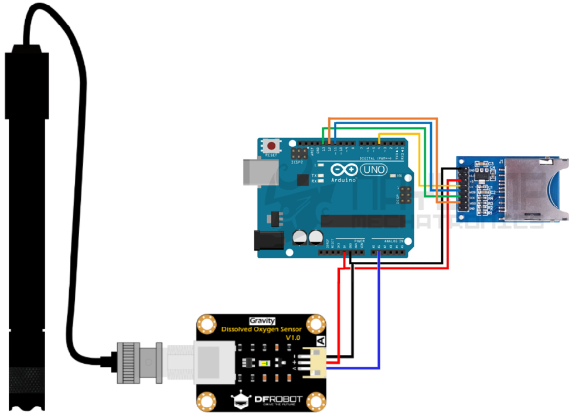

Circuito
Acontinuación se presenta el diseño del circuito y diagramas eléctricos para desarrollar el sensor.
Esquematico general del circuito
sadsadasdasdadasdsa

ESPECIFICACIONES DEL MÓDULO
| No | Etiqueta | Descripción |
|---|---|---|
| 1 | A | Salida de señal analógica |
| 2 | + | Vcc |
| 3 | - | GND |
| 4 | BCN | Conector cable sonda |
CÓDIGO DE CALIBRACIÓN
#include <Arduino.h>
#define VREF 5000 //VREF(mv)
#define ADC_RES 1024 //ADC Resolution
uint32_t raw;
void setup()
{
Serial.begin(115200);
}
void loop()
{
raw=analogRead(A1);
Serial.println("raw:\t"+String(raw)+"\tVoltage(mv)"+String(raw*VREF/ADC_RES));
delay(1000);
}
Conexion modulo arduino con SD
Para conectar el módulo de oxígeno disuelto al Arduino, se deben seguir los siguientes pasos: 1. Conectar el pin de salida analógica (A) del módulo al pin A1 del Arduino. 2. Conectar el pin de alimentación positiva (+) del módulo al pin de 5V del Arduino. 3. Conectar el pin de tierra (-) del módulo al pin GND del Arduino. 4. Asegurarse de que la sonda esté correctamente conectada al conector BCN del módulo. Una vez realizadas estas conexiones, el Arduino podrá leer los valores analógicos proporcionados por el sensor de oxígeno disuelto y procesarlos según sea necesario para su aplicación específica.

CONEXIONES MÓDULO SD
| Módulo SD | Arduino Uno / Nano |
|---|---|
| CS | 4 |
| SCK | 13 |
| MOSI | 11 |
| MISO | 12 |
| VCC | 5 V |
| GND | GND |